NewStarCTF_2025
Week 3
Misc
日志分析-盲辨海豚
是sql盲注的log文件 分析最后一部分即可
1 | import re |
区块链-以太坊的约定
1 | 本题由多个小问题组成，得到各个小问题答案后用下划线"_"拼接即可 |
第一题24个（还是12个来的 忘了） 第二题1145 第三第四题如下
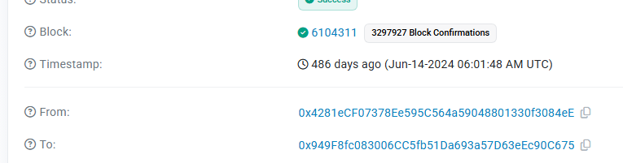
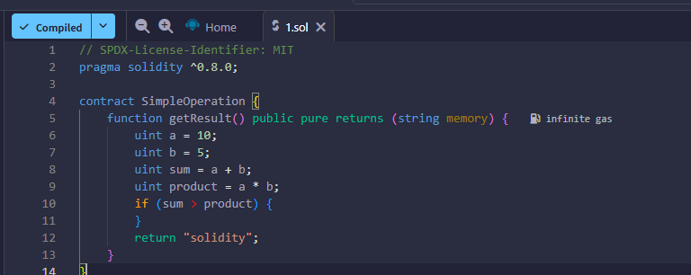
得到flag{24_1145_20240614_solidity}
Web
mirror_gate
文件上传类型 html中说flag位于/flag.php 还有个base64加密之后的信息
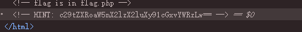
说是uploads里边藏了东西 目录爆破之后发现个.htaccess 文件说明所有webp文件会被当作php读取
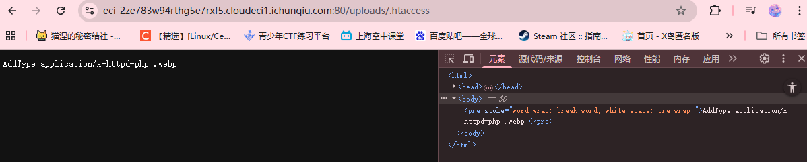
因为说有过滤 并且也实际试过了php直接改webp 不成不让上传 那就做个绕过
画图软件随便画张图 后缀改webp 用hexedit把想要执行的代码藏在文件的十六进制编码后边
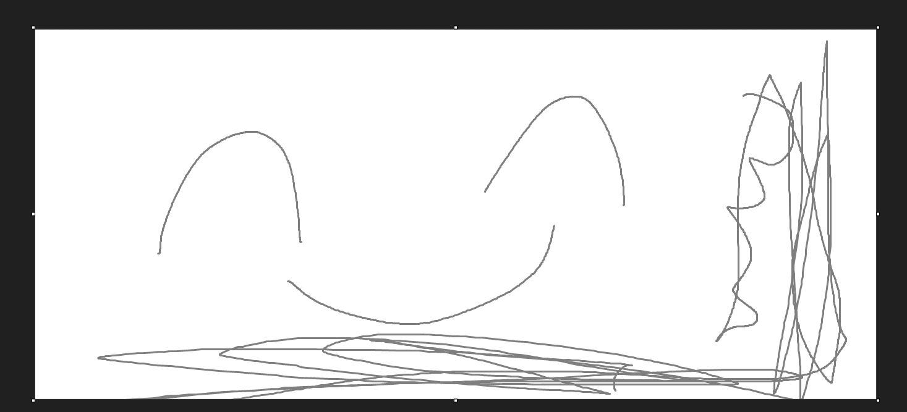
原理很简单 既然该图片会当作php运行 那么文件后边藏php代码就行了 能正常运 上传的时候也能假借前面的图片部分绕过waf
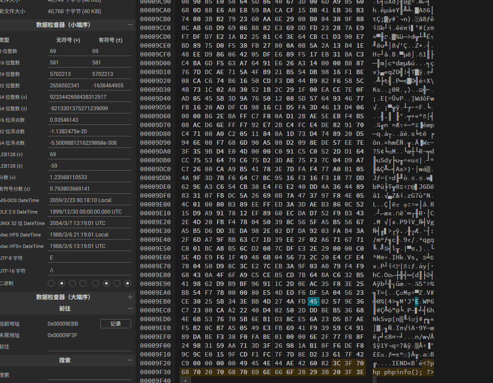
也没访问/flag.php phpinfo会直接显示所有变量内容 直接就出来了
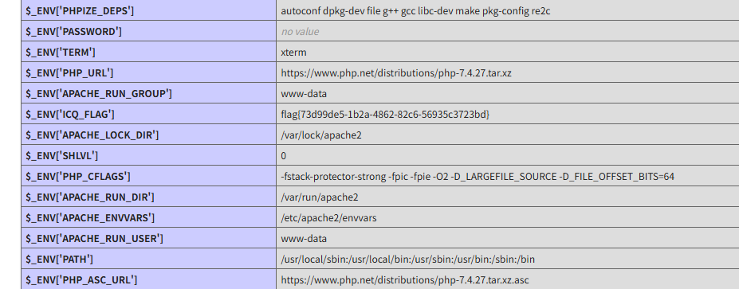
who’ssti
代码分析一通 是在"get_close_matches", "dedent", "fmean", "listdir", "search", "randint", "load", "sum", "findall", "mean", "choice"函数中随意选五个 让我们通过ssti漏洞的原理来触发 触发五个后获取flag
部分代码会触发WAF过滤导致500 经过筛选和试错后payload如下
1 | {{ config.__class__.__init__.__globals__['__builtins__']['__import__']('numpy').sum([1,2,3]) }} |
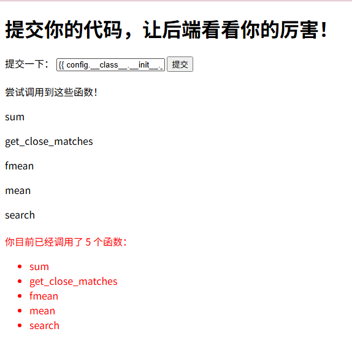
白帽小K的故事（2）
sql盲注 试下来单引号 空格都有过滤 只能试着用脚本爆破 思路如下
基于布尔盲注的二分法爆破器（Boolean-based blind SQLi, binary search）：
- 思路：逐字符地从数据库中抽取敏感字符串（例如
group_concat(flag)），对目标字符串的第i个字符，采用二分法在 ASCII 范围 [0,127] 内搜索该字符的 ASCII 值。 - 每一步构造一个 SQL 条件（像
ascii(substr((select(...)), i, 1)) > mid）作为注入的判断句子，并通过发送 HTTP POST 请求把它注入到name参数里。 - 根据服务器返回的响应（脚本里是判断
if "ok" in response.text），判定条件是否为真。以此缩小 ASCII 值区间并最终确定字符。 - 循环 i 从 1 开始，直到没有有效字符（脚本里
low > 32的判定略粗糙，但总的思想是：当取不到有效字符就停止）。 - 优点：请求数量为 O(L * log R)，L 为待爆字符串长度，R 是 ASCII 空间（log2(128) ≈ 7），比逐个字符穷举更快。
1 | import time |
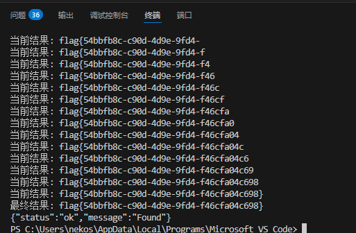
ez-chain
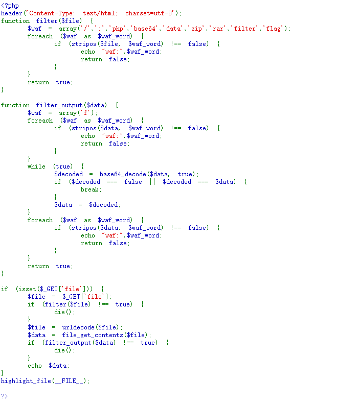
网页逻辑分析一下 是通过get传参?file=的文件包含 过滤了大部分payload常见词汇（: / php base64等）
并且传参后的回显也有限制 如果传出的东西含有字母f 就会停止输出 明显是不让flag原样输出
那就通过对原始字符串 php://filter/string.rot13/resource=/flag 做 字节级百分号编码（每字节变成 %HH） 然后把每个 % 再编码成 %25（即把 % → %25）
同时，使用 string.rot13 filter 会把文件内容做 rot13 转换输出 从而避免输出层对字母 f 的检测（flag 的 f rot13→s，不会被 filter_output() 拦截）
通过这样的加密逻辑 得到最终的payload%2570%2568%2570%253a%252f%252f%2566%2569%256c%2574%2565%2572%252f%2573%2574%2572%2569%256e%2567%252e%2572%256f%2574%2531%2533%252f%2572%2565%2573%256f%2575%2572%2563%2565%253d%252f%2566%256c%2561%2567
提交后获得加密后的flag 解密上传即可
小E的秘密计划
页面打开说是有备份文件 但是试了常见的都找不到 于是乎用dirsearch进行目录爆破
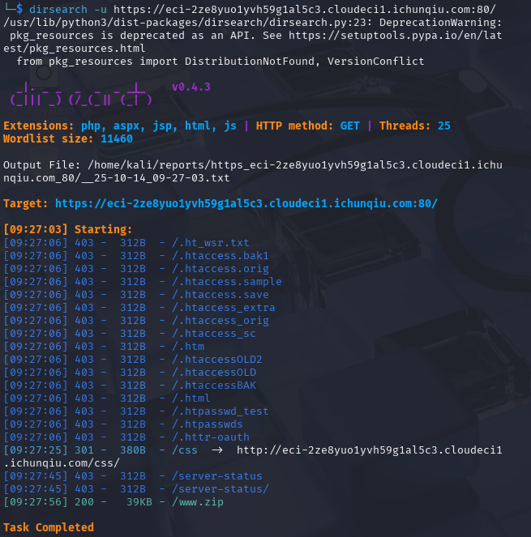
发现目录www.zip 打开之后是页面文件 揭示了存在另一目录public-555edc76-9621-4997-86b9-01483a50293e 里边还有残留的.git文件
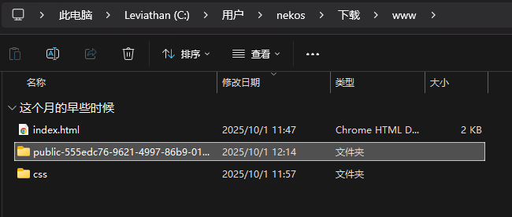
网站里输入并访问 是个登录页面 看来密码就在.git泄露的结果里
首先是回滚到了上个提交的版本 发现了tip.txt 提示什么是branch
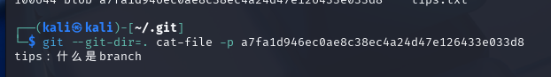
经提示发现某个被删除的branch 果然找到了user.php和密码
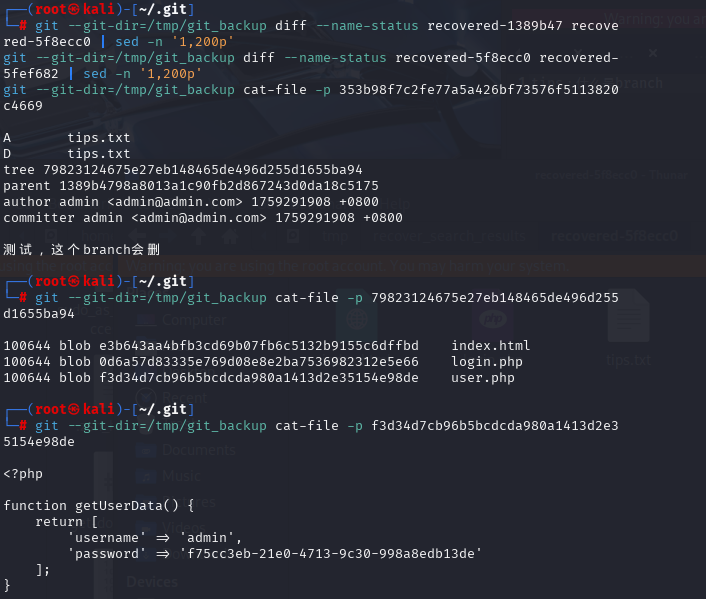
登陆进去之后还有一题 提示为mac会生成的相关文件 那多半是.DS_Store了
果然在目录下输入后获取了该文件 放进脚本处理一下
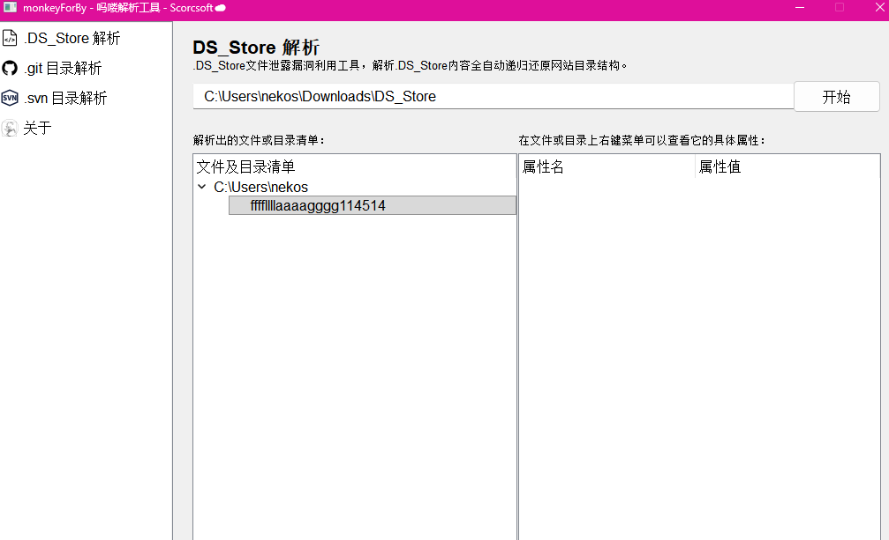
访问该目录 成功获取flag
mygo!!!
一开始是个页面 仨音乐和一flag按钮
经检查存在ssrf漏洞
但试了之后没法直接file://头 提示只能http:// 那就把方向转到另一个页面上
找了一会之后通过该漏洞访问flag.php 发现另一个页面 构建payload后成功获取flaghttps://eci-2zefcob15uoexwdjbi17.cloudeci1.ichunqiu.com/?proxy=http://localhost/flag.php?soyorin=file:///flag
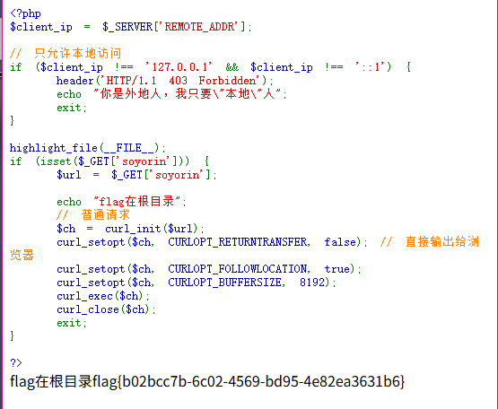
Crypto
被泄露的素数
观察程序的加密形式 关键在于复原p p被分为了两个部分 高位和低位
根据 public_key.pem 读取 n，估计 p 的 bit 长 p_bits ≈ n.bit_length()/2，计算 high_bit_count = round(p_bits * 2/3)（或用题目给的精确数）。
从 partial_p.txt 拿到被 mask 的高位块（p_high_masked）。根据 mask_bits（例如 12），枚举 0..2^mask_bits-1 的所有低位补全组合，得到 4096 个 p_high_candidate。将这些 candidate 写入 p_high_candidates_full.txt。
- 生成 candidate 的方法：
candidate = (p_high_masked | k)或更精确地如果文件里给出的是低端已保留部分则candidate = p_high_masked + k（我们在脚本中提供可选模式）。
对每个 p_high_candidate：
- 令 $A = p_high_candidate$，令未知的低位数
unknown_bits = p_bits - high_bit_count（如果在生成候选时还考虑了 mask_bits 的影响，要相应调整：unknown_bits = p_bits - high_bit_count + mask_bits，脚本中已处理）。 - 构造多项式 $f(x) = A \cdot 2^{unknown_bits} + x$（在
Z/nZ[x]中）。 - 使用 Sage 的
f.small_roots(X=2**unknown_bits, beta=...)（Coppersmith）尝试找使f(x) ≡ 0 (mod p)的小根x，得到完整的p = A * 2^{unknown_bits} + x。 - 验证
p | n（即n % p == 0），若成立，得到q=n/p，计算私钥解密ciphertext.bin。
若 small_roots 未能找出根，需调参（改 beta, 改 max_mask_bits, 在交互式 Sage 中针对单个 candidate 做深入调试）。
首先生成所有高位的可能性（16*16*16）
1 | #!/usr/bin/env python3 |
再根据高位来复原低位
1 | #!/usr/bin/env sage |
拼接后flag自然也出来了
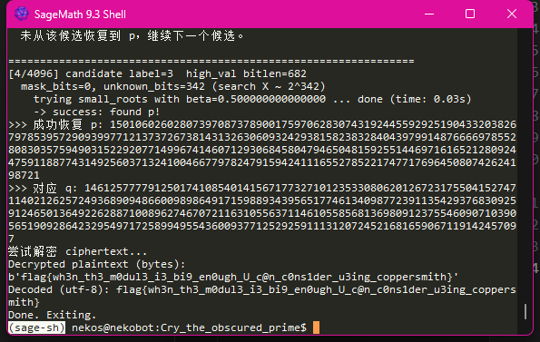
随机数之旅3
1 | # 导入数据 |
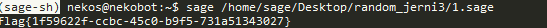
欧皇的生日
分析代码 是个哈希碰撞问题 因为 m=2的22次方 是 2 的幂次，可以用模运算的性质制造碰撞
在模 2的k次方 下，若两个数的差是 2的k-1次方，它们平方模 2的k次方 会相等
进入环境 输入 0 2097152 因为 2^21 = 2097152 无论 a、b、c 取什么随机值 这两个输入一定碰撞
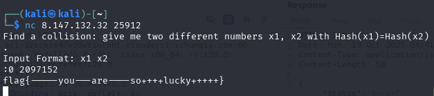
CBC之舞
1 | from Crypto.Util.Padding import unpad |
GCL
1 | from functools import reduce |
Week 2
Pwn
刻在栈里的秘密
1 | 通过 位置参数语法 %N$...（例如 %11$p、%11$s），可以直接读取第 N 个参数并把它当成指针（%p）或 C 字符串（%s）来解释。利用这点可以从栈上定位并读取隐藏的密码指针与密码字符串 |
交互式 互动后获取flag
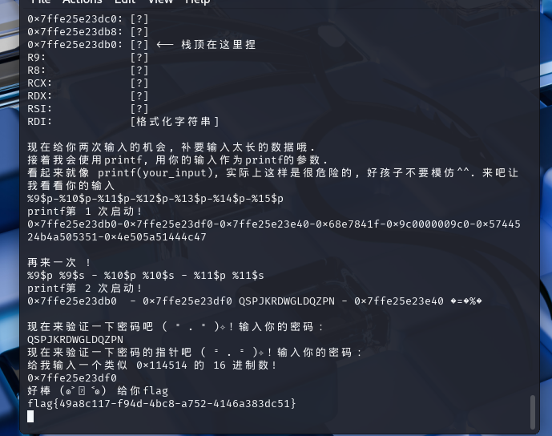
Reverse
Forgotten_Code
文件本身可以直接用vscode打开 可以看到类似互动的字段和汇编语言
分析后发现这是个对flag进行加密的文件
数据区有两段重要静态数据：
ng：.ascii "sp\177vuctp|xeb|hv~"（16 字节）。ezgm：8 个 32-bit 常量（4 组，每组两个 32-bit，作为加密后的对比值）。
fn() 的实现为标准 TEA 加密（Tiny Encryption Algorithm）：
- 使用 32 轮，delta =
0x9E3779B9。 - 密钥
k[4]来自ng（每 4 字节拼成一个uint32_t，小端）。
特别点：在 fn() 的开头，程序对 ng 做了 16 次 ng[i] ^= 17 并写回内存。也就是说 每次调用 fn() 前，ng 都被异或 0x11，并且这种修改是累积保留的 —— 所以每组 TEA 使用的 key 都不同（密钥链式变化）。
1 | import struct |
Look at me carefully
发现和flag有关的加密段
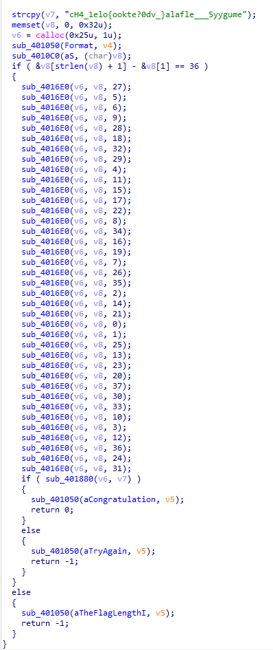
还原脚本
1 | #include <stdio.h> |
[re] 尤皮·埃克斯历险记（1）
明显暗示改exe经过了upx加密 要去壳
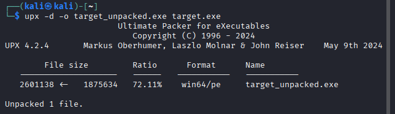
ida启动 通过主程序与encrypt函数 反推出flag
1 | __int64 __fastcall encrypt(__int64 a1, __int64 a2) |
Misc
MISC城邦-NewKeyboard
附件中有俩文件abcdefghijklmnopqrstuvwxyz1234567890-_!{}.pcapng与newkeyboard.pcapng
逻辑是前者提供了键盘依次按下abcdefghijklmnopqrstuvwxyz1234567890-_!{}发送的包
后者则是键盘按下flag信息发送的包
用wireshark结合cmd输出有用的信息 并通过脚本比对
1 | tshark -r newkeyboard.pcapng -T fields -e usbhid.data -Y "usbhid.data" |
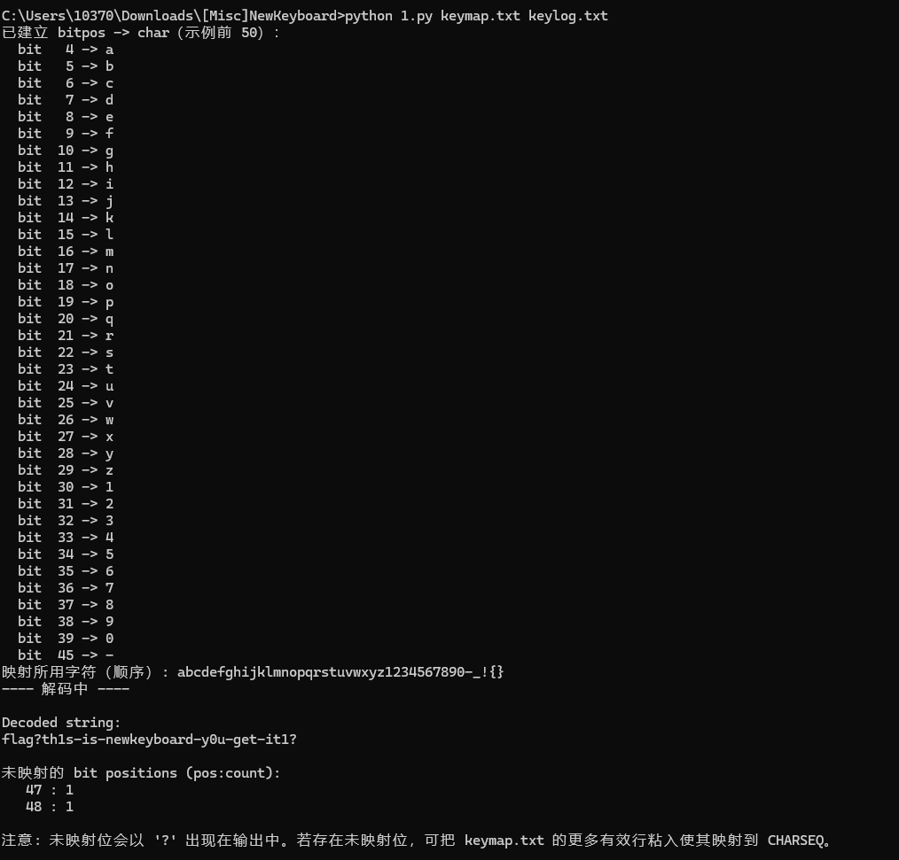
最终得到flag
OSINT-威胁情报
hash:2c796053053a571e9f913fd5bae3bb45e27a9f510eace944af4b331e802a4ba0
利用查询情报平台VirusTotal查看该文件的信息
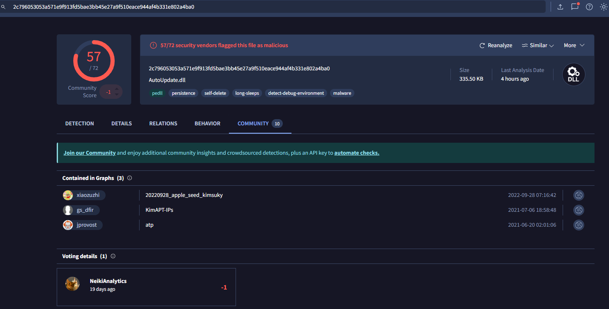
最终拼凑出flag{kimsuky_alps.travelmountain.ml_2021-03-31}
日志分析-不敬者的闯入
分析日志发现/admin 获取flag
星期四的狂想
分析数据包 发现一段类似加密逻辑的PHP代码
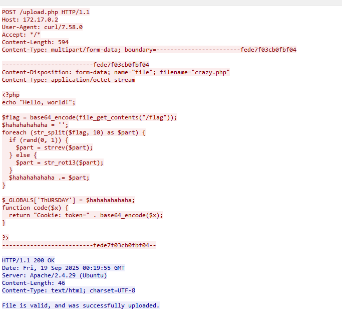
这段代码的意思是flag先是被base64加密了 随后每隔10个字符为一段 进行了随机的strrev（字符反转）或str_rot13（ROT13)加密
最后赋值于$hahahahahaha 最后这段密文再base64加密一次 通过Cookie:token=被传出去了
1 | # 利用wireshark的过滤语法来搜索一下 |
然后找到密文
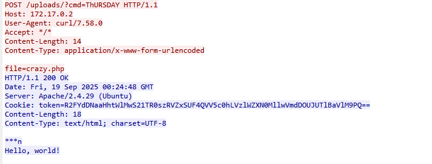
解密程序就写个脚本
1 | # decode_token.py |
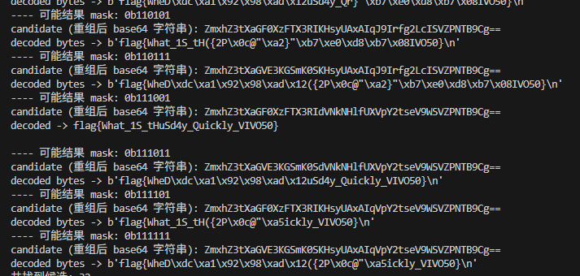
有了
美妙的音乐
丢到音频分析软件里边 flag藏在音谱里

Web
白帽小K的故事（1）
可以用文件包含的逻辑来做
1 | //构建一个简单的webshell,改名为shell.mp3 |
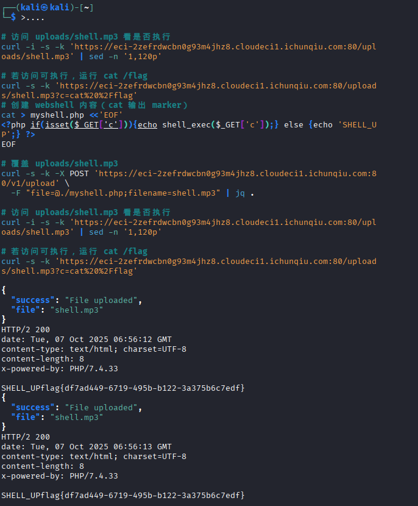
小E的管理系统
防火墙逻辑很多 屏蔽了%23 / < 空格 引号 and ,等等查询的时候要用的语句
绕过关键点:
空格与%20被屏蔽 使用%0a（换行）代替
逗号被屏蔽 使用join方法绕过
最终payload:
1 | id=1%0aunion%0aselect%0a*%0afrom%0a((select%0agroup_concat(name)%0afrom%0asqlite_master%0a)A%0ajoin%0a(select%0a1)B%0ajoin%0a(select%0a1)C%0ajoin%0a(select%0a1)D%0ajoin%0a(select%0a1)E) |
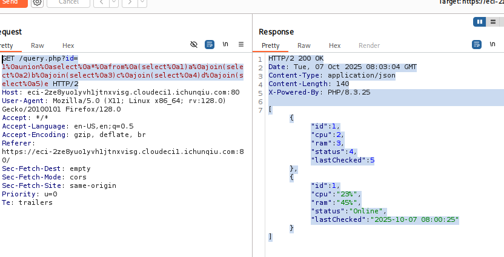
DD加速器
明显是命令执行漏洞 先构造127.0.0.1|ls -al 127.0.0.1|cat index.php
可以看到代码限制注入长度
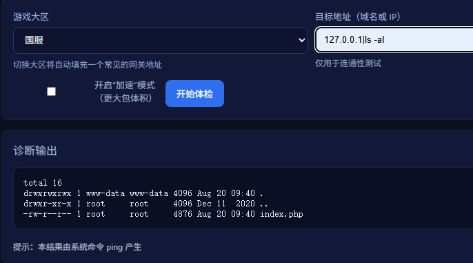
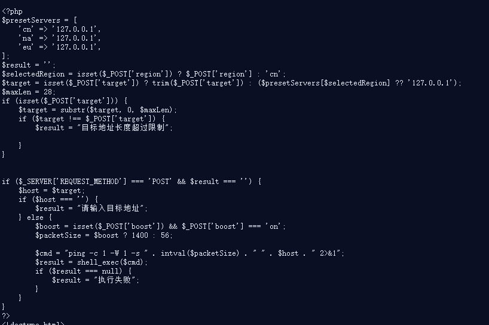
那就尽可能缩小payload长度1.1;find / -name flag
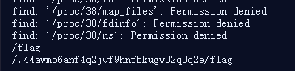
文件夹名字全输进去明显太长 用个正则1.1;cat /.*/*flag
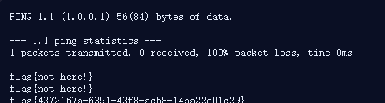
搞点哦润吉吃吃橘
第一层的账号密码在网页注释里
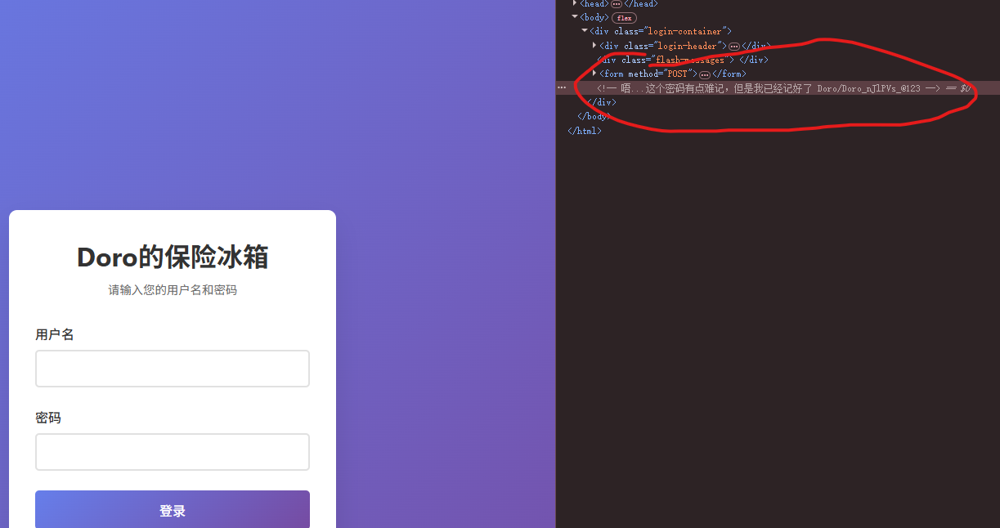
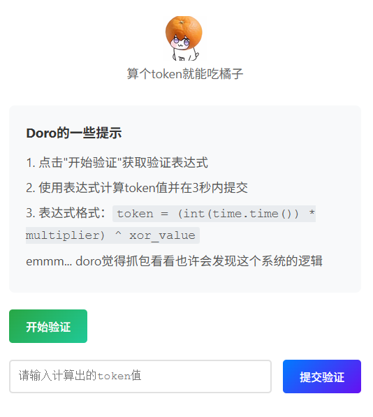
通关条件是3秒内算出给出的表达式并输入结果
提示说是抓包看生成逻辑 我直接编了个脚本算出结果输出到剪切板
属于力大砖飞了
1 | import re |
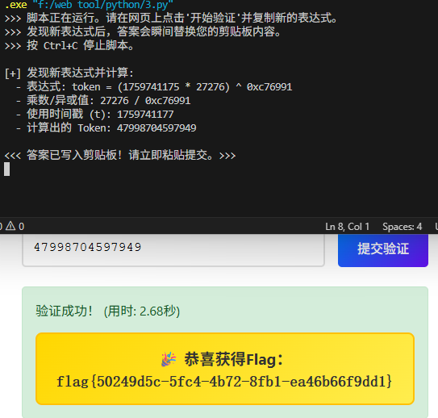
真的是签到诶
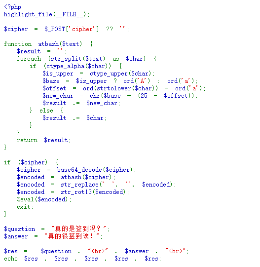
指示文档说你可以使用 Cyberchef 中 *To Hex* » *Find/Replace* » *From Hex* 的流程来某个字节进行特例化修改。
这样操作是为了在构造payload途中将可能被剔除的空格进行还原
以下为构建payload的脚本
1 | #!/usr/bin/env python3 |
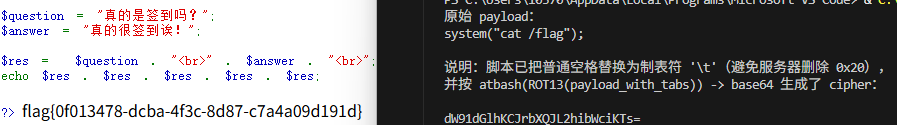
以post传参上传cipher=[payload]即可
Crypto
群论小测试
互动类
1 | # SageMath 自动识别 Cayley 表群名 |
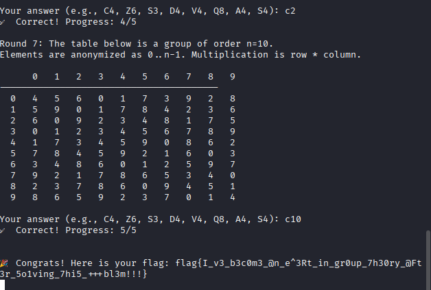
RSA_revenge
前半部分的flag还是挺好复现的
1 | import math |
1 | [*] start par1 recovery ... |
后半段思路为后半段通过 gcd(n2, c2 - hint2^e) 抠出 r，再用 hint3 恢复 p,q，继而 RSA 解密得到 m mod pq，与 m mod r 用 CRT 合并得到完整 m2；与 par1 恢复出的 m1 拼接并用 long_to_bytes 得到最终 flag 字符串 @t_and_Eu13r_v3ry_w3ll!!}
1 | # recover_flag.py |
FHE: 0 and 1
1 | import ast |
置换
置换密码
1 | import string |
SUCH_A_SIMPLE_PERMUTATION_WILL_DEFINITELY_NOT_STUMP_YOU.
Week 1
Pwn
input_function
Shellcode 注入
1 | from pwn import * |
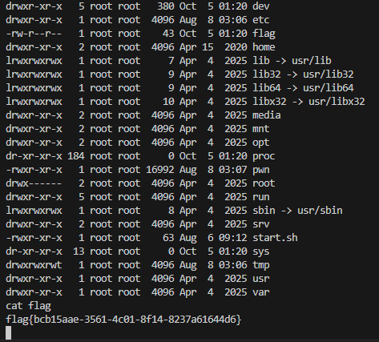
overflow
栈溢出
1 | from pwn import * |
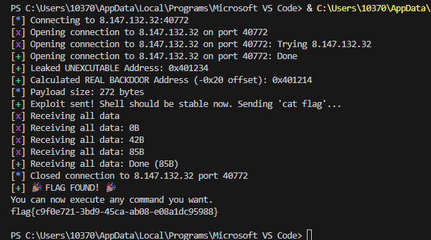
pwn’s door
分析源码后发现输入对应密码后cat /flag即可
1 | from pwn import * |

INTbug
通过整数溢出漏洞来获取 flag
1 | from pwn import * |
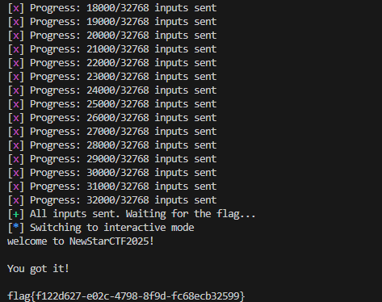
gdb_challenge
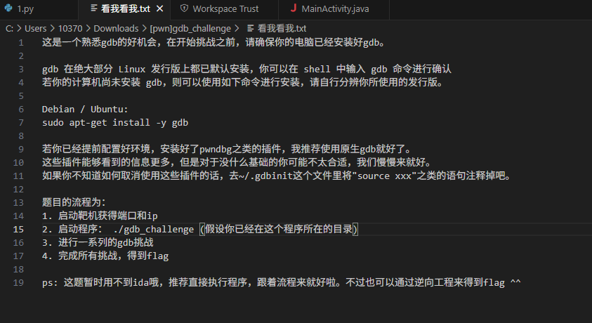
作者一上来就是很暖心的新手村教程啊 点赞
按流程走一遍就行了 就是希望下次能加个存档功能 失败/调窗口/误触ctrl+c 就得重来
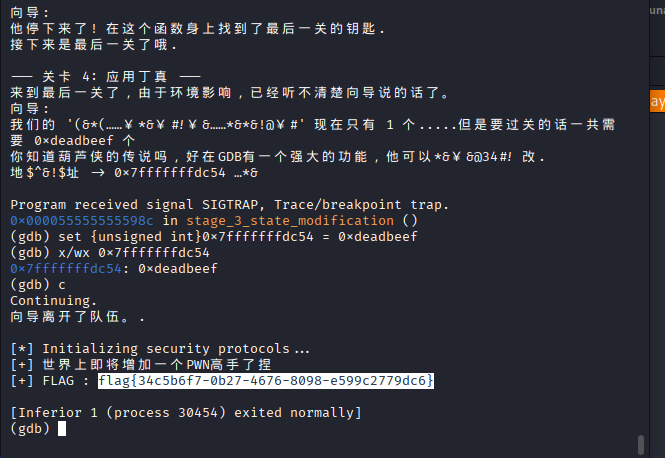
Reverse
plzdebugme
通过debugger/设置断点的方式获取flag
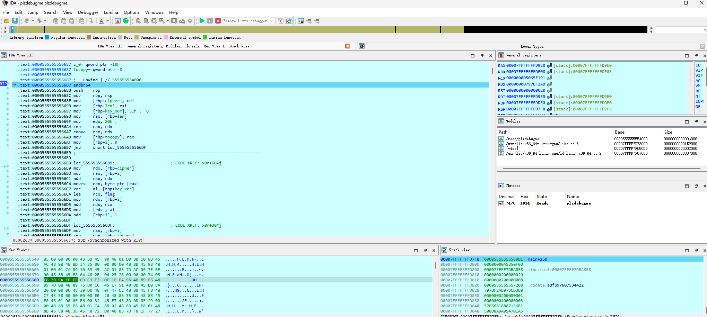
EzMyDroid
jadx-gui中导出源代码 发现页面中对应输入框-比对flag的具体函数 并组建逆向运行的代码
1 | from Crypto.Cipher import AES |
Puzzle
按照游戏内容寻找四份flag碎片 最后合一起提交就行
1和2都在函数名/函数中 3进行了些许加密 4也是直接放出了
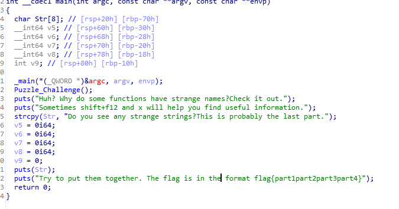
x0r
就是异或
1 | # 目标字符串，是程序里最终比较的 Str2 |
Strange Base
该题使用了自定义base64加密
1 | # decode_custom_b64_oneoff.py |
Crypto
不太会 这部分尽量只展示用到的代码 原理就不讲了
Sagemath使用指哪？
1 | key=1 |
随机数之旅1
1 | from math import isqrt |
初识rsa
MD5 能用线上查表 反查到原文
5ae9b7f211e23aac3df5f2b8f3b8eada 明文是 “crypto”
1 | # decrypt_flag.py |
小跳蛙
这个要登进服务器和人玩游戏 5次就能成功获取flag
规则是：
- 如果
a > b，青蛙跳到(a-b, b) - 如果
a < b，青蛙跳到(a, b-a) - 如果
a = b，青蛙停下
重复执行这个操作，直到青蛙停止为止。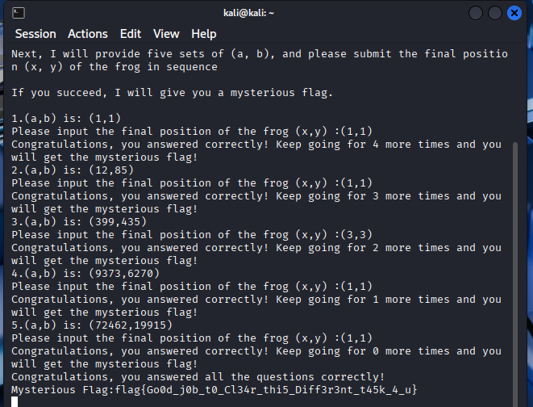
唯一表示
1 | from sympy.ntheory.modular import crt |
Misc
[Misc]我不要革命失败
获取dmp文件 得知flag格式为flag{崩溃类型(即蓝屏显示的终止代码)_故障进程}
拖到windbg里分析一下就行
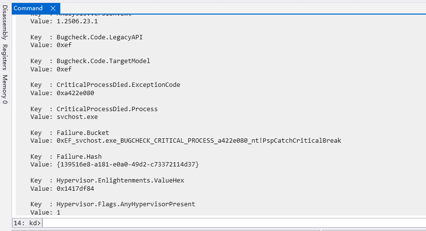
flag{CRITICAL_PROCESS_DIED_svchost.exe}
MISC城邦-压缩术
获取一个zip文件 密码暗示下来是小写字母+0-9数字的组合 爆破即可
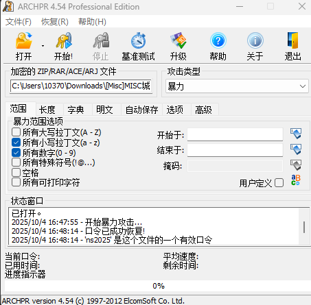
第二层还有加密 要使用bkcrack 直接解压出其中的flag.zip 随后利用其中未加密的key.txt结合 爆出未加密的flag.zip
最终得出flag
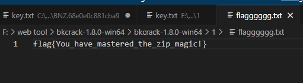
EZ_fence
给了张图片 图片内容为一段代码 中间有个等号
按照题干内容fence（栅栏密码）和4颗钉子（间隔为4）得出base64码密文
随后查看图片隐写 检查十六进制代码后发现该图片同时是个zip文件 但需要密码
通过代码更改图片大小后发现下半部分隐藏了base64隐写的自定义密轮
通过网站解密后可发现压缩包的密码 从而得到flag
前有文字，所以搜索很有用
track1 对应零宽字符加密 和base64加密
track2 对应snow加密 brainfuck加密和摩斯密码
track3 对应字数统计
三段合一起获得flag
OSINT-天空belong
根据机翼上的编号B-7198和边缘的紫色判断出这是乌鲁木齐航空的一架波音
照片信息显示是小米拍的 日期2025/8/17 15:03
航班UQ3573搜到之后15:15该航班在长沙稍作停留 那地点就是稍微前面一点的武汉
得出flag
Web
别笑，你也过不了第二关
java代码直接内置在了html中 并且外露 分析代码后用F12-console修改得分即可通关
multi-headach3
高亮提示robots（对应robots.txt）指向某个页面 和head （查看指向页面后302的header获取flag）
strange_login
使用用户名admin以及sql万能密码即可登录
我真得控制你了
一上来就是禁止使用各种快捷键进入开发者页面 但依旧可以使用右上角菜单栏开启
将按钮前方的div元素用控制栏编辑修改掉即可 点击进入下一关
下一关是弱口令密码爆破 这里直接破解即可

进去之后给你该页面的php源码 叫你分析后通过?newstar来get传参 输入指定通关代码即可获取flag
黑客小W的故事（1）
安装提示走流程
第一关是抓包 把count改成800 过关
第二关是get传参蘑菇孢子 post传参骨钉
第三关是在user agent中输入技能名
然后直接获取flag
宇宙的中心是php
页面html代码注释中潜藏目录 进入后发现php代码 post传参即可
结尾/引用
We are just another visitor in a transient world.